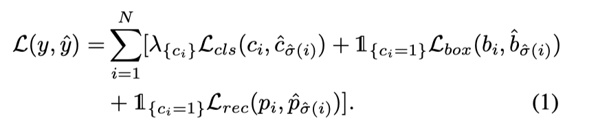

About
标题
UP-DETR: Unsupervised Pre-training for Object Detection with Transformers
UP-DETR: 针对目标检测的无监督预训练Transformer
发表
CVPR 2021 Oral
作者
Zhigang Dai ：华南理工大学
Bolun Cai ：腾讯微信AI
Yugeng Lin ：腾讯微信AI
Junying Chen* ：华南理工大学
代码/预训练模型
https://github.com/dddzg/up-detr
Content
背景介绍
DETR
是一种用来目标检测的transformer编码-解码结构，含有：
1）预训练的CNN（ResNet50 with 23.2M parameters）
2）没有预训练的Transdormer from scratch（Vanilla transformer with 18.0M parameters）
通过对不同的对象查询（object queries）学习专属空间，得到不同的对象查询的坐标和盒子大小
无监督（自监督）预训练
比如 BERT（NLP）的masked language model、MoCo（CV）的instance discrimination，通过一定的方式，从样本中无监督的构造一个 label
关键点：设计合理的pretext task
动机
既然CNN可以是无监督训练的，那么transformer能不能也做个无监督预训练呢
存在的问题
现存的用于CNN的pretext task不能直接应用于预训练DETR的transformers
主要原因是DETR中的transformer主要是用来做空间信息上的定位而MoCo的pretext主要是用来提高CNN的物体鉴别能力
想法
受无监督学习在NLP领域中的极大成功的启发，我们的无监督预训练也用超大的训练集（ImageNet），把目标检测作为我们的下游任务（downstream task），提出了新的pretext task —— random query patch detection
随机框若干个patch下来，把这些patch输入到decoder，原图输入到encoder，整个任务就变成了给定patch找他们在图中的位置。
对于一个无监督训练好的DETR，只要输入patch，他就能做到无监督定位patch的功能（不需要额外的NMS后处理），这个patch还能支持数据增强和尺度变换。
两个难点：
-
多任务学习 Multi-task learning
-
多查询定位 Multi-query localization
-
一张图内可能有多个对象，当对象查询object query太大时会很难收敛
-
随机设置M个query patch，并分配至100个embedding
-
提出了一个放在解码器上的attention mask，以确保query之间框的预测独立
-
提出了object query shuffle方法，以确保embedding和query patch的随机性
UP-DETR
1）pre-training
Signle-query Patch
-
将输入图像输入CNN主干神经网络中获得图像特征，加入位置编码输入tranformer
-
随机抓一块query patch，通过全局池化的CNN网络得到patch的特征，展平后分别加上object query形成N对预测框
-
计算N对预测框的相同匹配代价（same match cost），使用匈牙利算法计算真值（ground-truth）
-
损失函数（Hungarian loss）：交叉墒误差（match or not）+ （if match）\(l_1\) with IoU + （if match）重建损失

Multi-query Patches
- 把N个对象查询分成M组，每个query patch被分配给N/M个对象查询
- 对象查询嵌入会随机洗牌query shuffle
- “注意力遮罩”加在自注意力解码器的softmax层中，如果两个对象查询相互影响就会遮挡
- 其他的都和Signle-query Patch一样
2）fine-tuning procedures
实验
pre-training setup
1）训练了ImageNet上1.28M个无标签训练集，使用Res-Net50作为CNN骨干网络使用SwAV方法进行无监督训练。在训练UP-DETR中，冻结CNN参数
2）放大ImageNet里的图片尺寸到[320:480, :600]，随机patch的xywh，然后调整到128x128
3）使用SimCLR-style的transformer结构，使用AdamW来优化UP-DETR，初始学习率为0.0001，权重下降为0.0001
4）使用大小为256的mini-batch在8个V100上训练了60epochs，在40epochs的时候学习率*0.1
fine-tuning setup
使用VOC和COCO进行参数微调，tranformers的学习率设为0.0001，CNN骨干网络的学习率设为0.00005，其他都和DETR一样：8个v100 每个处理4张图
short：150 epochs，在100epochs的时候 lr*0.1
long：300 epochs，在200的时候 lr*0.1
目标检测结果对比
AP：如果检测框与groud-truth框的IOU区域大于某个阈值，就可以认为是true positive
如果IoU阈值=0.5，则为 \(AP_{50}\)
如果是对小物体（area<32），则为 \(AP_m\)，以此类推
- Faster R-CNN / DETR / UP-DETR 在相同数据集上目标检测结果
- 不同训练集150epochs和300epochs下DETR和UP-DETR学习曲线对比
- single-query和multi-query对比
- DETR、不使用冻结主干网络的UP-DETR（ac）、冻结主干网络的UP-DETR(bd)
可视化
1）手动裁剪图像中的物体patch，并对其进行SimCLRstyle数据增强
2）将这些patch作为query object送入模型，最后将模型的输出与边框进行可视化处理
这个过程可以看做是无监督的一次性测试或基于生度学习的模版匹配
结论
-
最近关于无监督预训练的研究主要集中在对比学习的特征识别上，而不是空间定位的专门模块。
-
在UP-DETR预训练中，预训练任务主要是通过位置编码和可学习的对象查询来设计补丁定位。
-
future work：一种先进的方法能够将CNN和变换器的预训练整合到一个统一的端到端框架中，并将UP-DETR应用到更多的下游任务中